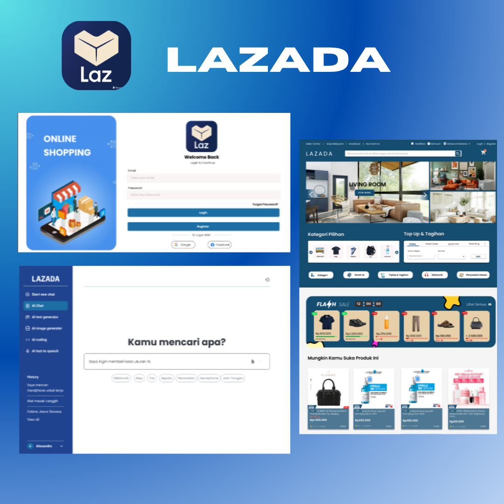

Vlab was founded as a digital services startup by a group of RPL (Software Engineering) students from SMK IT Assyifa, specializing in website development, mobile applications, and IoT (Internet of Things) solutions. The main challenge was establishing credibility and a strong brand identity in a competitive market, while also designing and developing Vlab's website. As the primary UI/UX Designer, my role was to: 1. Define the Digital Vision: Translate the RPL team's technical capabilities into a compelling value proposition for clients. 2. Design Vlab's UI/UX Identity: Create a Vlab Design System (logo, color palette, typography) that reflects professionalism, innovation, and reliability. 3. Build a Portfolio/Services Website: Design an intuitive and conversion-oriented Vlab website to showcase the portfolio and guide potential clients through the services offered.